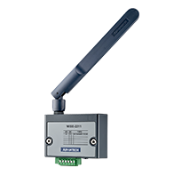

Model No.
Model Name
Function
Features
Benefit
Link

WISE-6610
Industrial LoRaWAN gateway
Networking
- Compliance LoRaWAN standard
- Embedded with Network server for data decryption
- LTE function support (option)
- Works with 3rd-party LoRaWAN nodes
- Provides secured data transmission
- Connects upto 500 nodes per gateway for mass LoRaWAN deployment

BB-WSW
Industrial LoRaWAN Node
Data Collection
- IP67
- Compliance LoRaWAN standard
- AI/DI for multiple sensors and customized software modules for various applications
- Best for outdoor or harsh environment applications.
- Connect to I/O device for instant data acquisition and transmission
- Provides long reansmission distance
- Extremely low power consumption

WISE-4610
Industrial LoRa/LoRaWAN Wireless Module
Data Collection
- Less interference than 2.4GHz spectrum
- Application-ready I/O combination with IP65 enclosure
- Powered by solar rechargeable battery or 10~50V DC input
- Designed for outdoor applications and withstands harsh environments
- Real-time monitoring
- Remote monitoring and management
- L Long distance transmission
- Better penetration through concrete and steel
- Less interference than 2.4GHz spectrum

WISE-2410
LoRaWAN Smart Vibration Sensor
Data Collection
- Plug-and-Play
- Equipped with ARM Cortex-M4 processer, enables vibration characteristics calculation.
- Compliant with ISO 10816 standard to cross-matching vibration values.
- 2 years battery life cycle ( report interval : 1/15mins )
- Paired with WISE-6610 for data transmission
- Auto connectivity switching base on application environment wireless sinal status
- Supports different service provider SIM cards to make sure LTE connectivity stable.
- Multiple WWAN modules to categorize data groups and balance transmission loading.